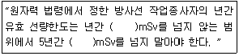
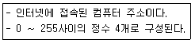

방사선비파괴검사산업기사(구) (2009-08-30 기출문제)
1과목: 방사선투과검사 시험
1. 다음 중 방사선 흡수선량의 단위로 옳은 것은?
- J / kg
- C / kg
- Gy / h
- Bq / s
(정답률: 알수없음)

2. Ir-192 25Ci 선원을 사용하여 차폐체 없이 방사선투과 촬영할 때 1주당 피폭선량을 100mR 이하로 한다면 1주간 촬영 가능한 필름의 최대 매수는?
- 24매
- 48매
- 72매
- 96매
(정답률: 알수없음)
3. Ir-191 에 열중성자를 흡수시키면 어떻게 변하는가?
- Ir-190
- Ir-192
- Os-192
- Pt-192
(정답률: 알수없음)
4. 다음 방사선 동위원소 중 비방사능이 가장 큰 선원은?
- Tm-170
- Ir-192
- Cs-137
- Co-60
(정답률: 알수없음)
5. 붕괴 상수가 6.93×10-3/일 인 방사성 동위원소의 반감기로 옳은 것은?
- 10일
- 50일
- 75일
- 100일
(정답률: 알수없음)
6. 다음 중 방사선투과사진의 품질에 영향을 미치는 인자와 거리가 먼 것은?
- 방사선원
- 필름의 종류
- 증감지의 종류
- 계조계의 종류
(정답률: 알수없음)
7. 다음 물질 중 초음파탐상시험에서 진동자로서 가장 높은 수신 능력을 가진 것은?
- 납
- 수정
- 황산리튬
- 티탄산바륨
(정답률: 알수없음)
8. 결함의 깊이 또는 시험체 내부의 결함은 알 수 없으나 간단한 교육 및 훈련으로 비교적 숙련의 검사가 가능하여 오래 전부터 표면의 검사에 활용된 비파괴검사법은?
- 자분탐상시험
- 와전류탐상시험
- 침투탐상시험
- 방사선투과시험
(정답률: 알수없음)
9. 다음 비파괴검사법 중 시험체의 재질에 따른 제한을 가장 적게 받는 것은?
- 자분탐상시험
- 방사선투과시험
- 침투탐상시험
- 와전류탐상시험
(정답률: 알수없음)
10. 침투탐상시험의 합격기준에서 특정 종류의 불연속이 허용되는 경우 그 합격기준의 설정에는 해당 불연속에 대하여 어떤 내용을 규정하여야 하는가?
- 불연속의 목적
- 불연속의 원인
- 불연속의 깊이
- 불연속의 허용 가능한 최대 크기 또는 분포
(정답률: 알수없음)
11. 다음 중 금속의 연성을 측정할 수 있는 시험 방법은?
- 인장시험
- 마모시험
- 충격시험
- 피로시험
(정답률: 알수없음)
12. 비파괴검사의 종류와 이에 다른 설명으로 틀린 것은?
- 초음파탐상시험은 시험체의 내부결함 검출에 적합하다.
- 누설시험은 시험체 내부 및 외부의 결함 검출에 적합하다.
- 자분탐상시험은 강자성체의 표층부 결함 검출에 적합하다.
- 방사선투과시험은 용접부 블로홀(blow hole) 등의 검출에 적합하다.
(정답률: 알수없음)
13. 다음 중 와전류탐상시험에 대한 설명으로 틀린 것은?
- 전도성 시험체 내부에 발생한 유도전류를 이용한다.
- 와전류 분포의 변화를 시험코일의 임피던스 변화로 결함을 찾아낸다.
- 와전류탐상검사는 강자성체나 비자성체인 전도체에 적용할 수 있다.
- 시험체 표면과 시험코일과의 거리 변화를 이용하여 결함의 형상 및 크기를 알 수 있다.
(정답률: 알수없음)
14. 방사선투과시험에서 X선 회절에 의한 반점을 감소시키거나 어느 정도 제거할 수 있는 방법으로 가장 적절한 것은?
- 전압을 올리거나 연박스크린을 사용한다.
- 전류를 올리고, 형광스크린을 사용한다.
- 전압을 낮추고, 연박스크린을 사용한다.
- 전류를 낮추거나 형광스크린을 사용한다.
(정답률: 알수없음)
15. 자분탐상시험에서 건식법과 비교하여 습식법의 장점으로 옳은 것은?
- 거친 표면에 감도가 높다
- 고온부의 탐상에 유리하다.
- 표면직하 결함에 검출능이 좋다
- 미세한 표면 결함에 검출감도가 높다
(정답률: 알수없음)
16. 다음 중 점(spot) 용접한 용접부의 접합성 검사에 가장 적합한 비파괴검사법은?
- 침투탐상시험
- 자분탐상시험
- 초음파탐상시험
- 방사선투과검사
(정답률: 알수없음)
17. 자분탐상시험에서 시험체의 자속이 흘러 자기를 띤 상태가 되는 것을 무엇이라 하는가?
- 자화
- 강자성
- 누설자속
- 자분의 적용
(정답률: 알수없음)
18. 다음 중 비파괴검사법 중 모서리 효과(Edge effect)와 표피효과(Skin effect)의 영향이 가장 큰 것은?
- 누설검사법
- 침투탐상시험법
- 와전류탐상시험법
- 방사선투과시험법
(정답률: 알수없음)
19. 다음 중 누설검사법의 누설율에 대한 단위로 옳은 것은?
- Pa/m3s
- Paㆍm3/s
- Paㆍs/m3
- m3/Paㆍs
(정답률: 알수없음)
20. 다음 중 비파괴검사 결과의 신뢰성을 확보하기 위한 대책과 거리가 먼 것은?
- 자동화 시험의 수동화 유도
- 정기적인 기기의 성능 관리
- 검사 인력의 주기적 훈련관리
- 정량화된 결함 평가 기술의 개발
(정답률: 알수없음)
2과목: 방사선투과검사 시험
21. X선관에 의해 방출되는 방사선의 총량과 관계가 먼 것은?
- 관전류
- 관전압
- 노출시간
- 휴지시간
(정답률: 알수없음)
22. X선관의 표적이 갖추어야 할 특성으로 옳은 것은?
- 원자번호가 낮아야 한다.
- 용융온도가 낮아야 한다.
- 열전도성이 낮아야 한다.
- 증기압(Vapor pressure)이 낮아야 한다.
(정답률: 알수없음)
23. 현상 전 물방울이나 현상액이 필름에 묻은 경우 현상 후 방사선투과사진에 나타날 것으로 예상되는 인공결함은?
- 안개현상
- 얼룩짐 현상
- 반점현상
- 휘어짐현상
(정답률: 알수없음)
24. 투과사진에 나타난 불량 원인과 그에 따른 대책의 설명이 잘못된 것은?
- 노출이 부족하여 흑화도가 높아진 경우 노출을 증가 시킨다.
- 과잉 현상으로 인해 안개현상이 발생한 경우 현상 시간이나 온도를 낮춘다.
- 현상액의 온도 변화로 그물모양이 생긴 경우 현상액의 온도를 일정하게 유지한다.
- 현상 전 필름에 물이 묻어 물방울 모양이 생긴 경우 물이 묻지 않도록 주의한다.
(정답률: 알수없음)
25. 방사선투과검사의 필름 현상시 허용 강도 이상의 암등(dark lamp)을 사용하였을 때 나타나는 가장 큰 현상은?
- 현상시간이 단축된다.
- 필름에 fog 가 발생된다.
- 필름에 황색얼룩이 생긴다.
- 필름에 정전기 mark 가 생긴다.
(정답률: 알수없음)
26. V 개선된 맞대기용접부에 초층 용접이 과잉으로 용입되어 뒷면으로 흘러내린 형상의 결함을 무엇이라 하는가?
- 오버랩(Overlap)
- 용락(Burn through)
- 융합부족(Lack of fusion)
- 용입불량(Incomeplete penetration)
(정답률: 알수없음)
27. X선 발생장치에 낮은 전압(kVp)과 높은 관전류(mA)를 적용할 때 X선의 강도 및 에너지로 옳은 것은?
- 낮은 감도, 약한 에너지의 X선
- 높은 감도, 약한 에너지의 X선
- 낮은 감도, 강한 에너지의 X선
- 높은 감도, 강한 에너지의 X선
(정답률: 알수없음)
28. 어떤 물질이 물, 수소(H2), 보론(B) 등 가벼운 물질에는 흡수가 아주 크며, 철(Fe), 납(Fb) 등 중금속에는 흡수가 작은 성질이 있다. 이 같은 특성을 이용하여 납저수탑 내의 물의 높이를 알아내는 검사법은?
- 형광투시검사
- 중성자투과검사
- 미시방사선투과검사
- 디지털방사선투과검사
(정답률: 알수없음)
29. γ선을 이용하여 방사선 투과검사를 할 때 사진상에 작용하는 산란선의 억제방법이 아닌 것은?
- 노출시간의 증가
- 콜리메타(Collimator) 사용
- 연박증감지(Lead screen) 사용
- 카세트(Cassette) 후면에 차폐체 배치
(정답률: 알수없음)
30. X선발생장치에서 관전압과 선원-필름간 거리가 일정할 때 노출량 계산을 위한 관전류(M)와 노출시간(T)과의 관계를 옳게 나타낸 것은? (단, M1, M2, T1, T2 는 M, T 각각의 변화량이다.)
- M1 × T2 = M2 × T1
- M1 × T1 = M2 × T2
- M1 + T1 = M2 + T2
- M1 − T1 = M2 − T2
(정답률: 알수없음)
31. 방사선투과검사의 수동현상과 자동현상을 비교한 것으로 잘못 설명된 것은?
- 수동현상시에는 현상액과 정착액 사용 사이에 정지액을 사용한다.
- 자동현상제에는 감광유제의 부풀음을 조절하기 위하여 경화제를 포함한다.
- 수동현상액에는 경화제를 포함하지 않으므로 젤라틴이 훨씬 많은 양의 현상제를 소모한다.
- 자동현상의 빠른 처리는 현상용액 조성 및 수동현상에서의 온도보다 낮은 온도를 채용하므로 달성된다.
(정답률: 알수없음)
32. 방사선투과검사시 동일한 방사능을 갖는 두 선원이 있을 때 모든 조건은 동일하고 단지 크기가 작은 방사선원을 사용하여 촬영하면 어떤 이로운 점이 있는가?
- 필름을 빨리 감광시킨다.
- 증감지 사용이 불필요하다.
- 투과도계를 사용하지 않아도 된다.
- 기하학적 불선명도가 작아져서 필름의 상질을 높일 수 있다.
(정답률: 알수없음)
33. 맞대기용접 루트부에서 용접할 홈의 밑부분에, 또는 용접물의 중앙에 위치하여 열려있는 부분에 용융금속이 침투되지 못했을 경우 발생하는 결함은?
- 수축공
- 용재혼입
- 용입부족
- 루트균열
(정답률: 알수없음)
34. 방사선투과검사시 현상온도가 낮았을 때 투과사진에 미치는 영향을 가장 옳게 설명한 것은?
- 선명도가 높아진다.
- 노란 얼룩이 발생한다.
- 콘트라스트가 낮아진다.
- 그물모양의 무늬가 발생한다.
(정답률: 알수없음)
35. 평판 맞대기 용접부를 방사선투과검사할 때 촬영배치에 관한 설명으로 잘못된 것은?
- 시험부의 유효길이는 선원-투과도계간 거리가 클수록 커진다.
- 방사선 조사방향은 방사선빔의 중심선이 시험부의 중앙이 되게 한다.
- 투과도계는 원칙적으로 시험부의 선원쪽 표면에 놓는다.
- 계조계가 적용되는 경우 원칙적으로 시험부의 선원쪽 표면에 놓는다.
(정답률: 알수없음)
36. 방사선투과검사 결과를 최상으로 얻기 위해선 필름의 선택이 중요하다. 다음 중 필름 선택을 위하여 고려해야 할 인자와 가장 거리가 먼 것은?
- 선원의 강도
- 사용되는 방사선의 종류
- 투과도계와 계조계의 종류
- 시험체의 조성, 형상 및 크기
(정답률: 알수없음)
37. 두께 30mm 인 강용접부를 선원-필름간 거리 30cm에서 Ir-192 40Ci 로 1분간 노출을 주어 적절한 사진농도를 얻었을 때 이 선원으로 5개월 후에 선원-필름간 거리 60cm에서 같은 농도를 얻기 위한 노출 시간은? (단, Ir의 반감기는 75일이다.)
- 4분
- 8분
- 16분
- 32분
(정답률: 알수없음)
38. 반감기 75일인 방사성 동위원소 100Ci를 150일 동안 방치 해 두면 몇 Ci 가 되는가?
- 12.5Ci
- 20Ci
- 25Ci
- 50Ci
(정답률: 알수없음)
39. 다음 중 가장 엄격한 판형 투과도계의 상질수준(image quality level)은?
- 1-1T
- 2-1T
- 4-1T
- 4-4T
(정답률: 알수없음)
40. 다음 중 연박증감지를 사용하는데 적합한 경우는?
- γ선 투과검사
- 250kV의 X선 투과검사
- 400MV X선 투과검사
- 제로 방사선투과검사
(정답률: 알수없음)
3과목: 방사선안전관리, 관련규격 및 컴퓨터활용
41. 강용접 이음부의 방사선투과 시험방법(KS B 0845)에 따르면 강관의 원둘레 용접 이음부에 대해서 상질의 종류가 A급 또는 B급을 적용할 때 계조계가 사용되는 관의 바깥지름은?
- 50mm 미만
- 75mm 이하
- 100mm 미만
- 100mm 이상
(정답률: 알수없음)
42. 원자력법령에서 규정한 일반인에 대한 유효선량한도로 옳은 것은?
- 연간 1mSv
- 연간 15mSv
- 연간 50mSv
- 연간 100mSv
(정답률: 알수없음)
43. Co-60 에 대한 납의 반가층을 12mm라 할 때 1R/h의 방사선량율을 125mR/h로 줄이면 필요한 납판의 두께는?
- 18mm
- 36mm
- 48mm
- 96mm
(정답률: 알수없음)
44. 방사선장해 여부를 제일 먼저 확이하기 위하여 다음 중 어느 검사하여야 하는가?
- 탈모현상
- 눈의 수정체
- 피부의 홍반점
- 혈액의 변화
(정답률: 알수없음)
45. 알루미늄 주물의 방사선투과 시험방법 및 투과사진의 등급분류 방법(KS D 0241)에서 투과사진의 결함 종류 및 등급은 기준 사진과 대조, 비교하여 판정한다. 이 때의 단위 영역 범위로 옳은 것은?
- 10 × 10mm
- 20 × 20mm
- 40 × 40mm
- 50 × 50mm
(정답률: 알수없음)
46. 다음 중 ( ) 안에 들어 갈 숫자가 순서대로 옳게 나열된 것은?

- 1, 10
- 10, 50
- 50, 100
- 100, 500
(정답률: 알수없음)
47. 보일러 및 압력용기에 대한 방사선투과검사(ASME Sec.Ⅴ, Art.2)에 의해 교정필름상에 표시된 실제 농도와 비교하여 투과사진의 농도를 측정할 농도계의 허용오차 범위 한계로 옳은 것은?
- ±0.0⑤
- ±0.01
- ±0.⑤
- ±0.10
(정답률: 알수없음)
48. 보일러 및 압력용기에 대한 방사선투과시험(ASME Sec.Ⅴ, Art.2)에서 재료 두께 75mm 초과 100mm 이하인 경우에 허용되는 최대 기하학적 불선명도의 크기는?
- 0.3mm
- 0.5mm
- 1.0mm
- 1.8mm
(정답률: 알수없음)
49. 강용접 이음부의 방사선투과 시험방법(KS B 0845)에 따라 T 이음부의 실제 두께측정이 불가능한 경우 방사선 조사방향을 정하는 방법으로 옳은 것은?
- 1방향에서 촬영할 경우 30° 기울어진 방향으로 조사한다.
- 1방향에서 촬영할 경우 45° 기울어진 방향으로 조사한다.
- 2방향에서 촬영할 경우 45° 기울어진 방향으로 조사한다.
- 조사방향은 어느 방향이든지 무관하게 투과두께가 최대가 되도록 한다.
(정답률: 알수없음)
50. 보일러 및 압력용기에 대한 표준방사선투과시험(ASME Sec.Ⅴ, Art.22 SE 94)에서 규정하고 있는 통상적인 수동필름 현상온도 및 유지시간으로 옳은 것은?
- 15°C에서 5 ∼ 8분
- 20°C에서 5 ∼ 8분
- 25°C에서 10 ∼ 30분
- 30°C에서 10 ∼ 30분
(정답률: 알수없음)
51. 강용접 이음부의 방사선투과 시험방법(KS B 0845)에 따른 계조계의 종류가 아닌 것은?
- 15형
- 20형
- 25형
- 30형
(정답률: 알수없음)
52. 방사선 물질이 체내에 흡수되어 생물학적 배설물과 방사성물질의 붕괴가 복합되어 방사선의 피폭으로 인한 우려가 반으로 줄어드는데 소요되는 시간을 무엇이라 하는가?
- 유효 반감기
- 물리학적 반감기
- 생물학적 반감기
- 생화학적 반감기
(정답률: 알수없음)
53. 1Ci를 SI 단위로 옳게 나타낸 것은?
- 3.7×1010R
- 2.58×10-4C/kg
- 0.001293g/C
- 3.7×1010Bq
(정답률: 알수없음)
54. 알루미늄 평판 접합 용접부의 방사선투과 시험방법(KS D0242)에서 모재의 두께가 몇 mm 미만의 시험부 촬영시 계조계를 이용하여 시험부와 동시에 촬영할 수 있는가?
- 20
- 40
- 60
- 80
(정답률: 알수없음)
55. 보일러 및 압력용기에 대한 방사선투과검사(ASME Sec.Ⅴ, Art.2)에서 규정하는 투과사진의 농도 범위를 설명한 것으로 틀린 것은?
- X선 발생장치를 사용하는 경우 투과사진의 최소 농도는 2.0이다.
- γ선원을 사용하는 경우 투과사진의 최소 농도는 2.0이다.
- 투과사진의 최대 농도는 4.0을 초과하지 않아야 한다.
- 다중필름 촬영의 경우 투과사진의 최소 농도는 각 장이 최소 1.3의 농도를 가져야 한다.
(정답률: 알수없음)
56. 웹 서버와 클라이언트가 통신을 수행하기 위해서 사용하는 프로토콜이며 웹 문서뿐만 아니라 일반 문서, 음성, 영상, 동영상 등 다양한 형식의 데이터를 전송할 수 있는 통신규약은?
- HTML
- XML
- ADSL
- HTTP
(정답률: 알수없음)
57. 정보 검색 연산자의 설명으로 옳은 것은?
- AND 연산자 – 연산자 좌우의 검색어가 모두 나타나는 데이터를 찾는다.
- OR 연산자 – 연산자 앞쪽의 검색어는 포함하지만, 뒤쪽의 검색어는 들어 있지 않은 데이터만 찾는다.
- NOT 또는 AND NOT 연산자 - 두 개 이상의 단어가 순서대로 연속해서 나오는 것을 찾는다.
- 구절 검색 – 연산자 좌우 검색어 중에서 하나만이라도 들어 있는 데이터를 찾는다.
(정답률: 알수없음)
58. 다음 내용은 무엇에 대한 설명인가?

- 도메인 이름
- DNS
- LAN
- IP address
(정답률: 알수없음)
59. 인터넷에 접속하기 위해 사용하는 웹 브라우저가 아닌 것은?
- 쿠기(Cookie)
- 모자이크(Mosaic)
- 넷스케이프(Netscape)
- 인터넷 익스플로러(Internet Explorer)
(정답률: 알수없음)
60. 인터넷 도메인 이름을 검색, 신청할 수 있는 도메인 서비스명은?
- nslookup
- whois
- finger
- whoami
(정답률: 알수없음)
4과목: 금속재료 및 용접일반
61. 결정성 고체에서 발견되는 격자결함(lattice defect)이 아닌것은?
- 재결정(recrystallization)
- 공격자점(vacancy)
- 격자간원자(interstitial atom)
- 전위(dislocation)
(정답률: 알수없음)
62. 초경합금의 일반적 성질의 설명 중 틀린 것은?
- 경도가 매우 높다.
- Mo2C, NbC, TaC 등이 초경합금으로도 사용된다.
- TiC를 주성분으로 하고 Ni 또는 Mo 의 결합상으로 하는 것을 cermet 이라고 한다.
- WC계 초경합금은 열전도도가 고속도강에 비해 떨어져 절삭성이 나쁘나 절삭 속도는 빠르다.
(정답률: 알수없음)
63. 쾌삭강(free cutting steel)의 피삭성(被削性)을 향상시키는 원소가 아닌 것은?
- Pb
- S
- Ca
- Mn
(정답률: 알수없음)
64. 열팽창이 다른 이종의 판(plate)을 붙여서 하나의 판으로 만든 것으로 온도조절용 변환기 부분에 사용되는 것은?
- 리드 프레임(lead frame)
- 바이메탈(bimetal)
- 서멧(cermet)
- 클레드(clad)
(정답률: 알수없음)
65. 시험편의 지름 10mm, 평행부 길이 60mm, 표점거리 50mm, 최대하중 9900kgf 일 때 인장강도는 약 몇 kgf/mm2 인가?
- 126
- 136
- 156
- 176
(정답률: 알수없음)
66. 0.35%의 탄소강은 상온에서 펄라이트와 초석 페라이트의 양을 각각 약 몇 %정도 가지는가? ( 단, α의 탄소 고용량은 0.02wt%이며, 공석점은 0.80wt% 이다. )
- 펄라이트 : 57.7, 초석 페라이트 : 42.3
- 펄라이트 : 42.3, 초석 페라이트 : 57.7
- 펄라이트 : 62.3, 초석 페라이트 : 37.7
- 펄라이트 : 37.7, 초석 페라이트 : 62.3
(정답률: 알수없음)
67. 철강에서 5대 원소로만 나열된 것은?
- B, N, Li, P, C
- Cu, Mo, W, V, Ni
- Ag, Cd, S, Sn, C
- C, Si, P, S, Mn
(정답률: 알수없음)
68. 2종 이상의 무기계, 금속계 및 고분자계를 조합하여 각 소재가 가지는 특성치를 합한 값 이상의 상승효과를 얻기 위해 설계된 재료를 총칭하는 명칭은?
- 복합재료
- 특수강
- 자성재료
- 기능성재료
(정답률: 알수없음)
69. 다음 중 Fe-C 평행상태도에 대한 설명으로 틀린 것은?
- α, β, δ의 동소체를 갖는다.
- 자기 변태점이 있다.
- 동소 변태점이 있다.
- 공석반응, 편정반응, 편액반응이 있다.
(정답률: 알수없음)
70. 다음 중 항공기용 신소재로 적합하지 않은 것은?
- 7175합금
- 2618합금
- MA87합금
- TEC-3합금
(정답률: 알수없음)
71. 무부하 전압 80V, 아크 전압 30V, 아크 전류 300A, 내부손실 4KW 라 하면 이때 효율은 약 몇 % 인가?
- 69.2
- 54.4
- 90.4
- 80.4
(정답률: 알수없음)
72. 일반적으로 용접부에서 나타나는 결함이 아닌 것은?
- 기공
- 용입부족
- 언더 컷
- 버터링
(정답률: 알수없음)
73. 가스 압접법의 특징에 해당되지 않는 것은?
- 접합부에 용제가 필요하다.
- 접합부에 탈탄층이 생기지 않는다.
- 작업이 거의 기계적이고, 예열이나 후열이 용이하다.
- 접합부에 첨가 금속이 불필요하다.
(정답률: 알수없음)
74. 연강의 가스 절단시 아세틸렌가스와 프로판가스를 사용하였을 때 비교한 것으로 맞는 것은?
- 아세틸렌가스는 불꽃 조정 및 점화가 어렵다.
- 박판일 경우 아세틸렌가스는 절단속도가 느리다.
- 후판의 경우 절단속도는 프로판가스가 빠르다.
- 아세틸렌가스는 절단재료의 표면 녹이나 이물질에 대한 영향이 크다.
(정답률: 알수없음)
75. 납땜 작업에 관한 일반적인 설명으로 틀린 것은?
- 일반적으로 융점이 450°C 이상인 용가재를 사용하여 납땜을 행하는 것을 경납땜이라고 한다.
- 부재는 모재가 용융되지 않고 접합되어야 한다.
- 용가재는 모재에 대해 친화력이 있어야 한다.
- 이음부의 간격은 넓어야 좋고, 이종 금속의 접합에 적용해서는 안된다.
(정답률: 알수없음)
76. 아세틸렌가스의 누설은 무엇으로 검사하는 것이 가장 좋은가?
- 소금물
- 비눗물
- 수돗물
- 황산구리액
(정답률: 알수없음)
77. 용접부 검사방법 중 기계적 시험에 해당되지 않는 것은?
- 인장시험
- 굽힘시험
- 부식시험
- 피로시험
(정답률: 알수없음)
78. 용접부의 잔류응력을 완화시키는 방법이 아닌 것은?
- 응력제거 풀림
- 그라인딩
- 저온응력 완화법
- 피닝(peening)법
(정답률: 알수없음)
79. 저항용접에서 점용접(Spot welding)의 품질에 영향을 미치는 요인 중 가장 큰 요소가 아닌 것은?
- 통전시간
- 용접전류
- 플라스마
- 가압력
(정답률: 알수없음)
80. 탱크, 용기 등 용접부의 기밀, 수밀 및 유밀을 조사하기 위한 목적으로 이용되는 검사법은?
- 누설검사
- 와류검사
- 침투탐상검사
- 육안검사
(정답률: 알수없음)